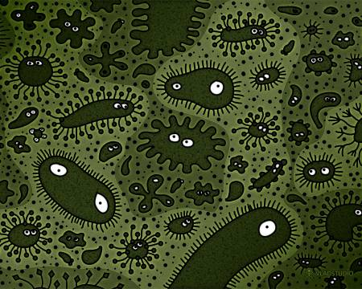
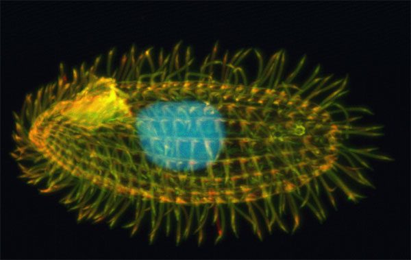
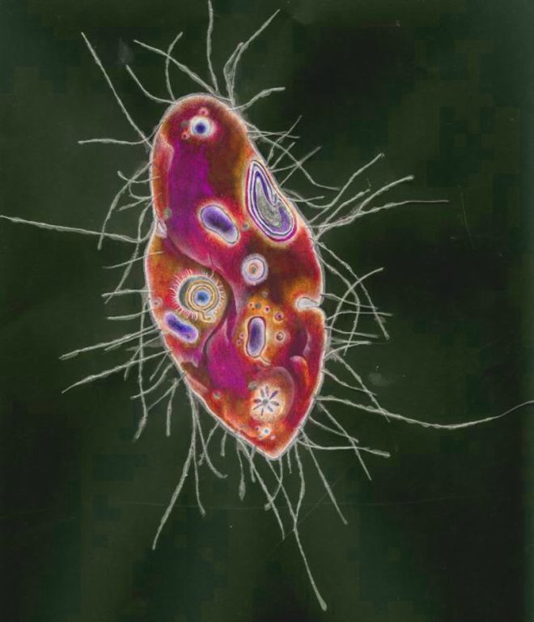
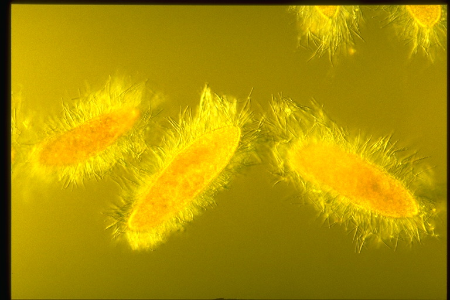

Welcome to Infusoria.js project.
This is basicaly resarch project, and fun too.
I try to make artifical life inside virtual world using genetics algorithms and neroweb.
Demo
It is in very alfa stage.
Click on link to see it in action!
Run demo genetic pool.Background
I chose infusorias as main model. This is the most complex one-cell creature in the nature. We can do only primitive model of it, but using some real world ideas. For example it has a hair-like appendage(organelles like cilia) that protrudes from the cell body, and are variously used in swimming, crawling, attachment, feeding, and sensation. Also we need implement some sort of metabolism(they can eat each others), and reproduction. In the end animal with best appendage configuration and behaviour will win battle for life!
http://en.wikipedia.org/wiki/Ciliatehttp://ru.wikipedia.org/wiki/Инфузория   
All this implemented in pure JavaScript
Source code can be found on GitHub.com https://github.com/SergKam/infusoria.js